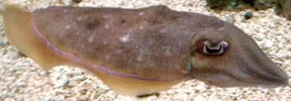

SAFARI
Users
- Varieties of Culinary Cuttlefish
- Cuttlefish Forms Available
- Cleaning and Dismantling Large Cuttlefish
- Cooking Cuttlefish
- Cuttlefish Products
- Health & Nutrition
Varieties of Culinary Cuttlefish
Common Cuttlefish
[European Common Cuttlefish; Sepia officinalis]
This is the cuttlefish of Europe and North Africa. These mollusks can
grow to a mantle (body) length of 19 inches and to a weight of 8-3/4 pounds,
but are generally much smaller (to 12 inches) outside tropical waters.
Common Cuttlefish are found in the Mediterranean, around the British
Isles, and in the North and Baltic seas. It is also found along the
west coast of Africa, reported from as far south as South Africa. This cuttlefish is
considered an important seasonal catch in Tunisia. They are IUCN Red
Listed as LC (Least Concern).
Photo by Hans Hillewaert distributed under license
Creative Commons
Attribution-ShareAlike v4.0 International, attribution required
.
Pharaoh Cuttlefish
 [Sepia pharaonis]
These Indo-West Pacific mollusks can grow to a mantle (body) length of
16-1/2 inches, and to a weight of 11 pounds. They are a very important
catch in the northern Indian Ocean, and around Australia and the
Philippines. 90% of the Australian catch is this species. For another
view, see photo at the top of this page. They are nice and meaty,
weighing more per inch of length than the European. They are found as
far west as the Red Sea and Persian Gulf, and some have invaded the
Mediterranean. This cuttlefish is IUCN Red Listed DF (Data Deficient),
but is probably not threatened. They are now being farmed on a
significant scale in Thailand.
Photo by Captmondo distributed under license
Creative Commons
Attribution-Share Alike v3.0 Unported.
Kisslip Cuttlefish
[Seiche baisers (French); Sepia lycidas]
This is an Indo Pacific Cuttlefish, but with a fairly restricted range.
It is found from Burma around through Indonesia and north to Japan, but
not as far south as Australia. It is noted for extreme color
changes, including glowing neon blues and greens. It is quite large,
growing to a mantle length of at least 15 inches, with a record weight
or 11 pounds. It supports a minor fishery and is IUCN Red Listed as DF
(Data Deficient), but is not considered threatened.
Photo by E64 distributed under license
Creative Commons
Attribution-ShareAlike v4.0 International, attribution required
.
Cuttlefish Forms Available
I don't know about the East Coast, and suspect cuttlefish is not common in the "Flyover" regions of North America, Cuttlefish is easily available here in Southern California, found in the frozen food cases of many Asian markets. It is sold in many forms and in many sizes. It can be purchased whole, as caught (see photo at top of page), or all cleaned, skinned and ready to cut for recipes, as shown in the photo to the left.
[Pharaoh Cuttlefish; Sepia pharaonis]
The photo specimen to the the left is "as caught", just immediately
frozen. It was purchased from a large Asian market Los Angeles (San
Gabriel) for 2019 US $5.69 / pound, caught wild in Vietnam. It weighed
3.71 pounds as sold, but thawed, drained and dismantled it yielded 1.85
pounds for a yield of 50%, or $11.38 / edible pound. Of course, there
will be shrinkage in cooking depending on type and length of cooking.
For complete instructions on cleaning and dismantling this cuttlefish,
see our page Cleaning and Dismantling
Large Cuttlefish
The photo specimen to the the left was the same type of Cuttlefish
pictured in the previous paragraph, but viewed from the bottom. It was
expertly cleaned in Vietnam, so it is all ready to use in recipes without
further work, except to dismantle and cut as needed for your recipe. It
was purchased from a large Asian market Los Angeles (San Gabriel) for
2019 US $5.69 / pound. From 1.76 pounds. It will loose liquid when
thawed, and there may be some trimmings, but yield will be around 80%.
Edible cost will be about $8.00 / pound - not bad for seafood. Of
course, there will be shrinkage in cooking depending on type and
length of cooking. To dismantle, you will need to do some, but not
all, of the steps for whole cuttlefish, starting with pulling the
head. See Cleaning and Dismantling
Large Cuttlefish.
The photo to the left is of tiny Kisslip Cuttlefish that have been
factory cleaned in Vietnam. Their cuttlebones have been removed to give
access to the inside for cleaning. The largest was 1-5/8 inches mantle
length and weighed 3/8 oz (12 grams), but some were as small as 3/4 inch
mantle length. These can be used whole in soups and similar recipes.
They will shrink quite a bit but not become too stiff to eat easily,
just a little crunchy.
Cooking Cuttlefish
like Squid and Octopus, Cuttlefish is an "eat it raw, cook it briefly at high temperature, or simmer slowly for 30 to 45 minutes" sort of beast. Generally, follow the recipe, unless you're pretty sure it doesn't know what it's doing.You may want to decoratively score flat pieces of Cuttlefish. Like Squid, it will curl as it cooks. The strongest curl is toward the skin side, so score the inside of the piece (curved side for fin meat) - you want the scoring on the outside of the curl. The secondary curl is front to back, again to the skin side, but this curl won't be evident except in strips cut lengthwise or diagonally.
Cooked for less than 30 seconds, yield will be near 100%, but much longer and the cuttlefish will shrink alarmingly. Your big pile of raw Cuttlefish will become a much smaller pile, and it's weight will be about 60% of raw. Most of the shrinkage happens in the first couple of minutes. Recipes must be designed to take this into account. Of course, for longer cooking, the cooking liquid should become part of the recipe to recover some flavor from the lost weight.
If you are wet cooking your cuttlefish, and there's a lot of colored skin on the arms, cook them separately, either in different water or after all the bodies have been cooked and removed. The skin can discolor the bodies if cooked with them.
If short wet cooking, you should have the water at a rolling boil in a pot filled nearly to the brim. Put some of the Cuttlefish (not too much so the water stays hot) in a wire strainer that fits the pot. Lower the strainer into the boiling water for the recommended time, then pull it and immediately refresh the Cuttlefish under cold running water. I've found large cuttlefish more tolerant than small ones and cooking time can be up to a minute before they toughen. Actually, 15 seconds is enough for small ones, and up to 30 seconds for larger cuttlefish. Keeping to these times, your yield will be near 100% of uncooked weight, and the cuttlefish will still be a little crunchy, not rubbery.
If you are going the long simmering route, check your Cuttlefish often for taste and texture. You want to pull it as soon as it becomes tender enough but still has some bite. Overcooked Cuttlefish loses both flavor and texture. The time will be about 45 minutes for larger cuttlefish, so start sampling when you approach that time, sooner for small ones.
Yield:
Yields for preparing Cuttlefish before cooking will be found in the section Forms of Cuttlefish Available for each form. The yield after cooking depends on the mode of cooking and the duration of cooking. For short hot cooking it can be about 100%. For long simmering it will be about 60%. Nearly all the weight loss will be within the first few minutes.Cuttlefish Products
Cuttlefish Ink
[Sepia officinalis]
This ink is from a special ink sack in Cuttlefish, used to make a "smokescreen" when the cuttlefish needs to escape. It is pretty much interchangeable with Squid Ink, but considered superior to squid in Spain, where it is most used. It has long been used as a deeply black food coloring and flavoring, particularly in Spain, but also in Portugal, Italy and France.
Typical uses are for black pasta, "black rice" (not naturally black
rice, but a dish of cooked rice colored deep black by Cuttlefish or
Squid ink) and the famous black paella of Valencia. It is generally
preserved with sea salt, but should still be stored in the refrigerator
and used within 1 to 2 weeks of opening the container, or should be
frozen.
Cuttlebone
[Cuttlefish Bone; Sepia species]
This is what remains of the cuttlefish's former external shell. It forms a "roof" over the body cavity, and extends for nearly the entire length of the mantle (body). It is loosely in place with only skin over it, and can be removed by making a short cut at the front of the mantle and squeezing it out. It is foam-like, and composed of Aragonite, a crystalline form of Calcium Carbonate.
This structure stiffens the cuttlefish's body, and also acts as a
buoyancy control device by changing the ratio of air to water in it. It
has been used in toothpaste and antacids, but today it's main nutrition
use is as an easily consumed calcium source for caged birds, chinchillas
and other confined animals. It is still used for molds in goldsmithing
and in other crafts.
Health & Nutrition
Like other cephalopods (and crustaceans), Cuttlefish is fairly high in cholesterol. That was once a big scare, but, as so often happens, the AHA was wrong. It is now known the body manufactures most of its own cholesterol, and dietary cholesterol has little effect for most people. In fact, populations that eat large amounts of high cholesterol shrimp and squid tend to have a low incidence of coronary disease. Eating too little cholesterol is now suspected to have negative effects on health. Your brain is made mostly of cholesterol, so you don't want to run short, or you may end up joining the Tea Party, or believing in conspiracy theories. Chem trails anyone?
Like octopi, cuttlefish are toxic, but only the Flamboyant Cuttlefish (Metasepia pfefferi) is any danger to humans. The flesh is as toxic as that of the totally lethal Blue Ringed Octopus, and it may have a toxic bite too. Fortunately, it's tiny, and so scary looking it's unlikely to be eaten. It is, of course, found in coastal waters of Australia, which seems to be the world center for toxic critters. To be fair, it, and the Blue Ringed Octopus, are also found as far north as the Philippines.